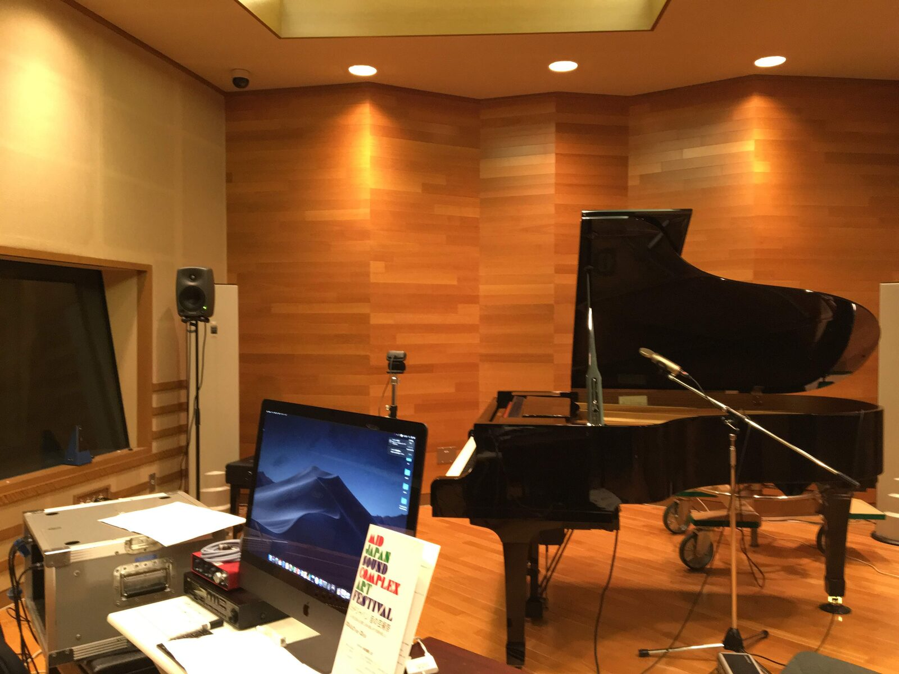
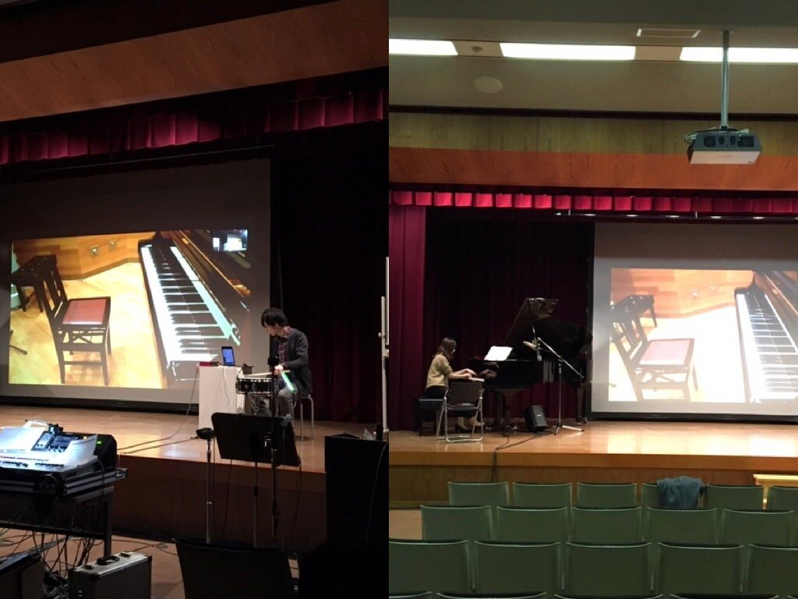
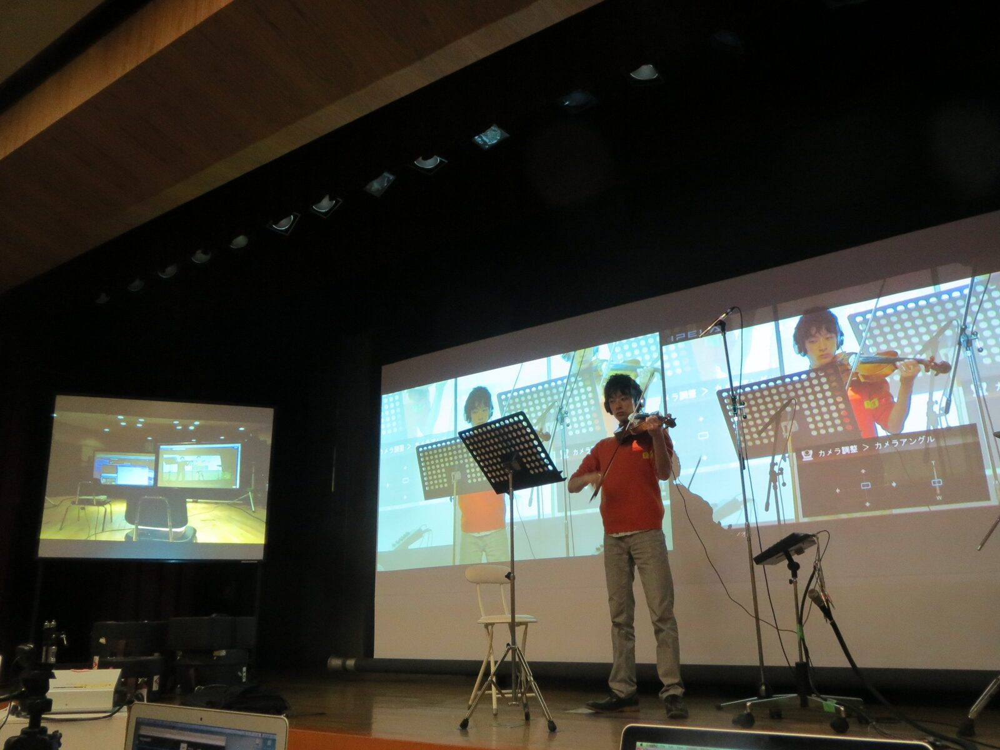

Diastema for the time floating between the networked remote places
PROJECT DESCRIPTION
Diastema in Ancient Greek means a space between two adjacent substances and can be explained as interval. In the Western Middle Ages the term indicates an adjective describing notation.
In my music series Diastema, two pianos were set in two different venues and were connected through network. MIDI signals were sent on OSC and the Disklavier was interactively played by the pianist’s performance which occurred in the remote place. Audio information was transmitted through DANTE or Jacktrip in order to get high-speed response.
The short edition of the first performance (2020 Feb.22, Nagoya, Japan) can be found in Vimeo.
For NIME2021, I present a new version of “Diastema”, that is ,”Diastema Ⅱ” which will be performed in two remote places. The two places will audio-visually connected. Because of several layers of latency (LAN, audio processing, hardware transmission, etc.), the audience will not only see the time difference between the two but also hear the tuning difference between the instruments. Interval of the pitches, separation of the places and time difference are the three dimension of the piece. The audience can see and hear all the three dimensions from his/her own point. Where and when is the point?
PROGRAM NOTES
In the first performance of this piece, two pianos were set in two different buildings and were connected through network. One piano was tuned in 440hz and the other in 442hz. MIDI signals were sent on OSC and the Disklavier was interactively played by the pianist’s performance. Audio information was transmitted through DANTE in order to get high-speed response. "Diastema Ⅱ”is performed in two remote places. The two places are audio-visually connected. Because of several layers of latency (LAN, audio processing, hardware transmission, etc.), the audience will not only see the time difference between the two but also hear the tuning difference between the instruments. Interval of the pitches, separation of the places and time difference are the three dimension of the piece. The audience can see and hear all the three dimensions from an objective point.
PERFORMANCE REQUIREMENTS
- equipment: Zoom or the other video conference application to receive our online performance. The live image and sound of the zoom should be projected to the audience.
- space: Space for presenting this piece , a traditional concert stage with 2 ch speakers and a visual projector will be suitable. Other public space is possible if that has 2 ch speakers and a visual projector.
- performer(s): Our networked performance will be set up in OUR places including the performers. All the performers are in several separated places but all the performers will be managed in OUR places.
- feasibility: Our team has 7-year experiences to perform the networked music, including ICMC,ISCM,NEMC, JSSA etc. See below;
https://www.academia.edu/4823023/Asian_Network_Music_Performances_with_Jacktrip
MEDIA


Fig.1 Disklavier in the NCU studio


Fig.2 left : Percussionist controls disklavier
right : Pianist controls two pianos


Fig.3 A networked performance between Taipei and Nagoya